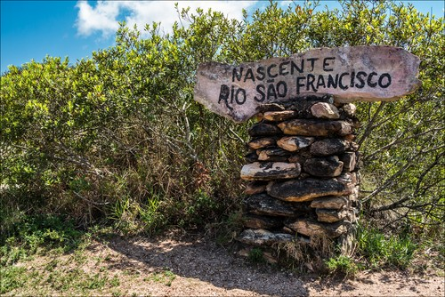
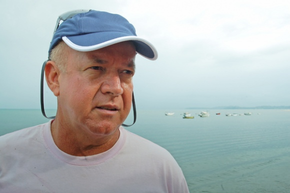

Fotos da Viagem



Sou Waldy, com uma trajetória de 4 mandatos como vereador e anos de contribuição como secretário municipal e presidente da Câmera em Camaçari. Ao longo da minha vida pública, sempre busquei promover mudanças positivas para minha cidade e inspirar novas gerações.
Em sua mais recente aventura, viajei desde a nascente do Rio São Francisco até o mar. Começando de canoa e finalizando de jet ski, registrei histórias, culturas e paisagens únicas. O livro é um convite para conhecer de perto o "Velho Chico" e refletir sobre sua importância para o Brasil.
Uma aventura de grandes desafios, em que te passarei o conhecimento de ponta a ponta.
Instagram: @waldyfreitas